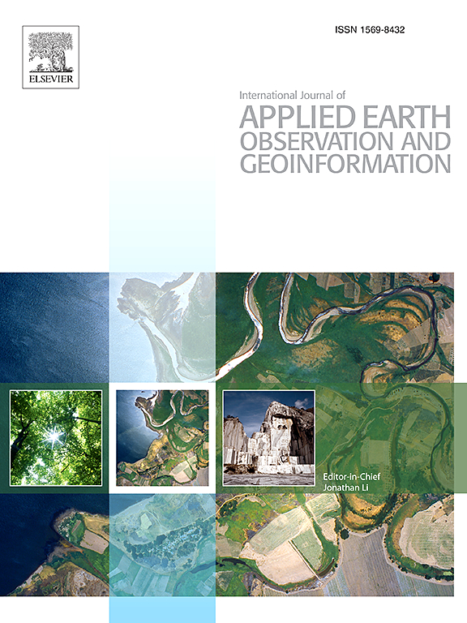
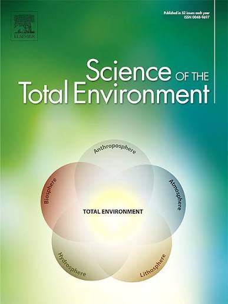
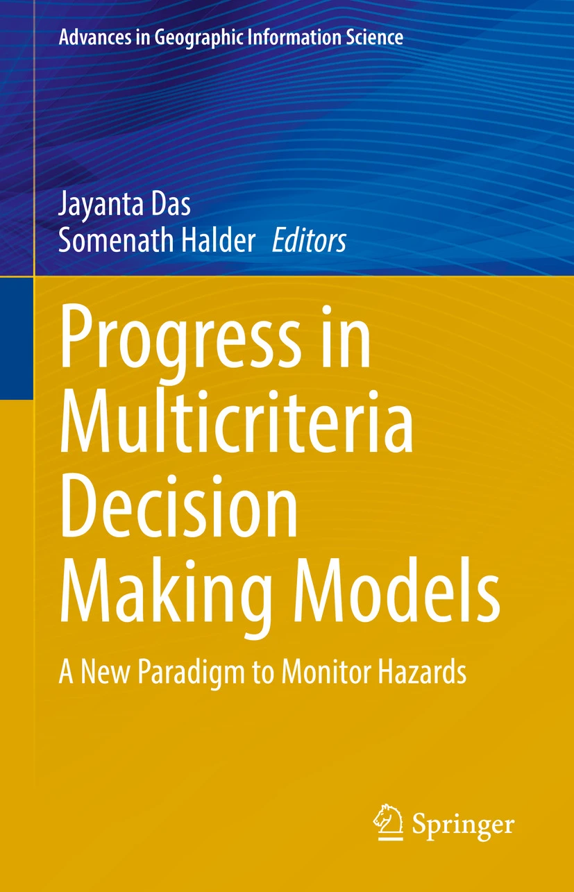
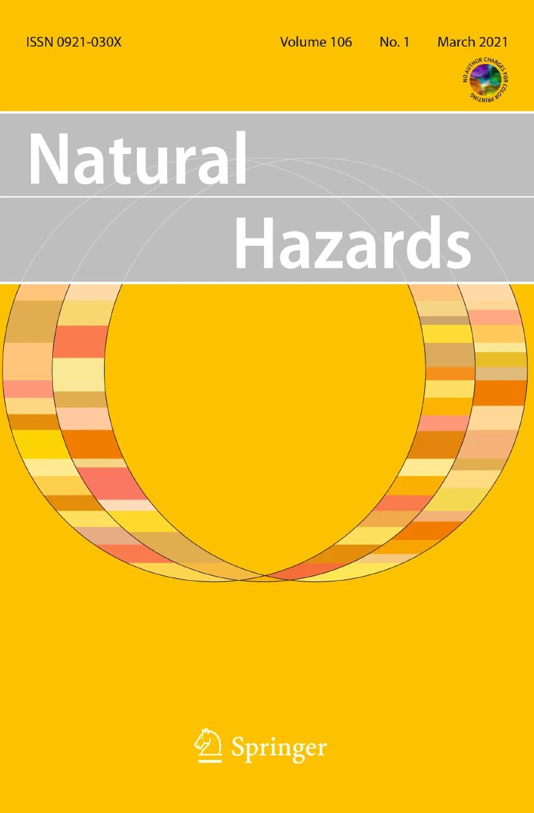
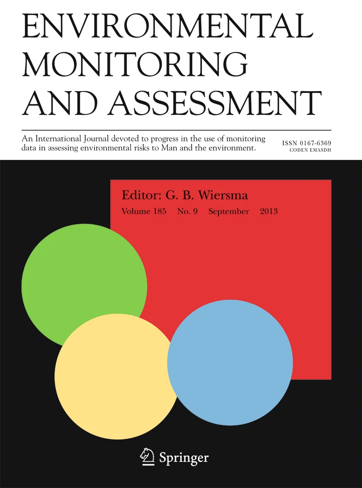
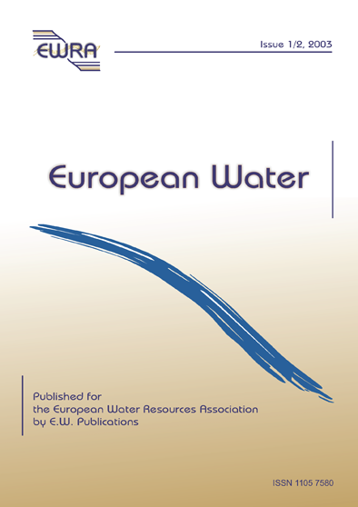

My doctoral research develops a socio-hydrological framework to understand, map, and prioritise flood risk across India, from major river basins to rapidly growing cities. The work proceeds along two complementary pathways: a basin-to-national-scale hazard and vulnerability pipeline, and a city-scale compound-flood risk assessment for India's 100 Smart Cities.
Research themes
Reanalysis Evaluation
Summary: Systematic evaluation of atmospheric reanalysis precipitation datasets to identify which are reliable enough for flood modelling across India's river basins.
Mahanadi Flood Modelling
Summary: A regional case study testing whether ERA5 reanalysis rainfall can reproduce observed flood inundation — the foundational study of the thesis.
Nationwide Flood Hazard
Summary: A 100 m-resolution hydrodynamic flood-hazard model covering 25 major Indian river basins.
Methods: LISFLOOD-FP hydrodynamic simulation forced with the best-performing reanalysis rainfall, validated against the July 2023 North India flood event using MODIS-derived inundation extent.
Output: Validation statistics — Hit Rate 0.81, False Alarm Ratio 0.41, Error Bias 2.06 — supporting a nationwide flood-hazard layer.
Vulnerability and National Risk
Summary: District-level socio-economic and physical vulnerability scoring, combined with hazard to produce a composite national flood-risk picture.
Methods: Shannon Entropy weighting and TOPSIS ranking applied to demographic, infrastructure, and physical exposure indicators across 680+ districts.
Output: A district-level Flood Vulnerability Index feeding into a composite national flood-risk assessment.
Multi-day Flood Response
Summary: Examines how multi-day rainfall events translate into differential flood resilience across Indian basins.
Methods: Multi-day design-storm derivation combined with hydrodynamic simulation to compare basin responses to sustained rainfall.
Output: A comparative view of basin-scale resilience to multi-day flood-generating storms.
TRIC: 100 Smart Cities
Summary: A city-scale Tier-based Risk Index for Cities (TRIC) quantifying compound flood-risk disparities across India's 100 Smart Cities.
Methods: A copula-based framework combining urban-scale hazard modelling with exposed-population and GDP data and a city-tier classification system.
Output: 10.35 million people (7.64%) and US$147.48 billion in GDP (9.03%) identified in High + Very High compound-hazard zones; Surat, Ahmedabad, Chinchwad, Visakhapatnam, Kalyan and Guwahati identified as Tier-5 (highest-risk) cities, with 27 Tier-4 cities making up the rest of the national priority set.
Tools and Workflows
Summary: A browser-based decision-support tool for comparing reanalysis and flood datasets interactively.
Methods: Interactive NetCDF-based comparison tool; nationwide simulations run on PARAM Ganga, a National Supercomputing Mission facility at IIT Roorkee.
Output: A working prototype supporting dataset selection and correlation analysis for flood-risk research.
Publications
Published journal articles and the book chapter, first-author and co-authored alike (each card is tagged), sortable by date, journal impact factor, or citation count. Manuscripts still under review or in preparation are listed separately at the bottom, since they don't yet have citation or impact-factor data.
-
2025
First-author Singh, H. and Mohanty, M.P. (2025). Performance of ERA5 products in capturing pluvial and fluvial inundation: a statistical-cum-hydrodynamic framework for resource-constrained large flood-prone watersheds. Water Resources Management.
Impact factor 5.13 (2024) 6 citations (Google Scholar, Jul 2026) -
2025

First-author Singh, H. and Mohanty, M.P. (2025). Multi-scale assessment and entropy-MCDM framework for evaluating reanalysis precipitation datasets over Indian basins. International Journal of Applied Earth Observation and Geoinformation, 144, 104919.
Impact factor 9.83 (2024) 4 citations (Google Scholar, Jul 2026) -
2025

Co-author Tyagi, M., Singh, H., Thakur, D.A. and Mohanty, M.P. (2024). Compound risks of floods and droughts over multi-hazard catchments. Science of The Total Environment, 957, 177689.
Impact factor ~8.0 (2024) 13 citations (Google Scholar, Jul 2026) -
2025

Book chapter Singh, H., Tripathi, P., Thakur, D.A. and Mohanty, M.P. (2025). Socioeconomic-cum-physical vulnerabilities to riverine floods over large watersheds: a comprehensive framework leveraging Shannon Entropy and TOPSIS. In: Progress in Multicriteria Decision Making Models, Springer.
Book chapters aren't journal-indexed for impact factor -
2025
Co-author Mishra, D., Singh, H., Kumar, M. and Mohanty, M.P. (2025). Advanced hydrological assessment with SWAT+ under climate change. Science of The Total Environment, 994, 180062.
Impact factor ~8.0 (2024) 7 citations (Google Scholar, Jul 2026) -
2025

Co-author Deopa, R., Singh, H., Tripathi, V. et al. (2025). Cascading impacts of 2025 June–July multi-hazard episodes in the Western Himalayas. Natural Hazards, 121, 23417–23422.
Impact factor 4.26 (2024) 3 citations (Google Scholar, Jul 2026) -
2023

First-author Singh, H. and Mohanty, M.P. (2023). Can atmospheric reanalysis datasets reproduce flood inundation at regional scales? A systematic analysis with ERA5 over Mahanadi River Basin, India. Environmental Monitoring and Assessment, 195, 1143.
Impact factor 3.60 (2024) 17 citations (Google Scholar, Jul 2026) -
2024

Co-author Tripathi, V., Mohanty, M.P. and Singh, H. (2024). Fidelity of machine learning models in capturing flood inundation through geomorphic descriptors over the Ganga sub-basin, India. European Water, 87/88, 1–10.
Not JCR-indexed — no impact factor 12 citations (Google Scholar, Jul 2026)
Under review / in preparation
Under internal review Singh, H. and Mohanty, M.P. A nationwide ranking of India's 100 Smart Cities under disparate urban flood risk.
Under review Saha, S., Singh, H. and Mohanty, M.P. Nationwide multi-scenario GLOF hazard mapping in Nepal using remote sensing and hydrodynamic modelling.
In preparation Singh, H. and Mohanty, M.P. Multiday storm event reveals differential flood resilience across Indian basins.
Research Geography
Publications are tied to study areas, not events, so this section maps the geographic domains of Hrishikesh's research rather than conference/event locations (see the Conferences and Workshops and Training pages for event locations). No publisher or journal office locations are mapped.
| Study area | Related publication | Status |
|---|---|---|
| Mahanadi River Basin, India | Singh & Mohanty (2023), EMA | Published |
| India-wide river basins (25 CWC basins) / nationwide flood-hazard framework | Singh & Mohanty (2025), WRM; Singh & Mohanty (2025), IJAEOG; nationwide thesis work | Published / ongoing |
| India's 100 Smart Cities (nationwide, city-scale) | TRIC manuscript | Under internal review |
| Ganga sub-basin, India | Tripathi, Mohanty & Singh (2024), European Water | Published (co-authored) |
| Western Himalayas | Deopa, Singh, Tripathi et al. (2025), Natural Hazards | Published (co-authored; lead author Rahul Deopa) |
| Nepal (GLOF hazard mapping) | Saha, Singh & Mohanty | Under review (co-authored) |